Trauma Informed
Weight Lifting.
A body-first methodology for individuals and groups who have experienced trauma and adversity.
Responsive, not one-size-fits-all.
Trauma Informed Weight Lifting (TIWL) is a body-first methodology for individuals and groups who have experienced trauma and adversity, and does not involve a standard prescriptive sequence, weightlifting movements or one-size-fits-all programming. Such an approach is antithetical to the understanding of complex trauma and the need to be attuned and responsive to the needs of those we work with.
At Defying the Odds Fitness, our programs incorporate a transformative trauma-informed approach to support embodiment, inclusivity, responsiveness, autonomy and collaboration to provide safer and more therapeutic experiences for our clients.
Trauma Informed Weight Lifting is committed to principles of practice that incorporate anti-oppressive and anti-racist frameworks and values (Do Less Harm) as well as trauma-informed and healing justice frameworks and values (Then Do Good).
View 8 Main Objectives